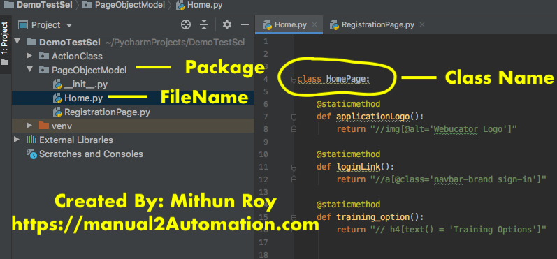

Create a Pakage For Page Object
Right click on project --> new --> Python Package

Give Pakage name --> Click Enter --> Python Package is created successfully.
Right click on Python Package --> new --> Python File
Give File name --> Click Enter --> Python File is created successfully.

We have created 2 Python files for page object. One is for Home page and another for Registration page.
# Create Page Object For Home Page
Below code describes page object for 3 Web Elements.
class HomePage: as class name
@staticmethod makes static methods in the traditional sense.
applicationLogo(): As method name and naming convension says it is an logo.
All three methods are returning XPATH as String return type.
class HomePage:
@staticmethod
def applicationLogo():
return "//img[@alt='Webucator Logo']"
@staticmethod
def loginLink():
return "//a[@class='navbar-brand sign-in']"
@staticmethod
def training_option():
return "// h4[text() = 'Training Options']"
# How To Call These 3 Methods From Another Class
From Another Python Package --> Python File first we have to Import Page Object Model Python file as below
from PageObjectModel.Home import HomePage
Here PageObjectModel is POM Package Name , Home is Python File name as Home.py and HomePage is the Class name inside the class.

To use 3 Web Element the syntax in ClassName.Methodname as below.
HomePage.applicationLogo()
HomePage.loginLink()
HomePage.training_option()
We can write below code to check whether all these 3 web element are present in a web page or not as below.
self.assertTrue(Driver.is_web_element_displayed(HomePage.applicationLogo()))
self.assertTrue(Driver.is_web_element_displayed(HomePage.loginLink()))
self.assertTrue(Driver.is_web_element_displayed(HomePage.training_option()))
# Create Page Object For Registration Page
Below code describes page object for 3 Web Elements.
class RegistrationPage: as class name
@staticmethod makes static methods in the traditional sense.
applicationLogo(): As method name and naming convension says it is an logo.
All three methods are returning XPATH as String return type.
class RegistrationPage:
@staticmethod
def sign_in_page_header():
return "//h1[text()='Sign In']"
@staticmethod
def sign_in_page_title():
return "//h1[text()='Sign In']/../p"
@staticmethod
def submit_log_in():
return "//button[text()='Log In']"
@staticmethod
def email_error():
return "//span[text()='Please provide your email address.']"
Similarly Registration page elements are also can be calledsame as Home Page.
In Another Class declare from PageObject.RegistrationPage import RegistrationPage
Now Call RegistrationPage elements as below.
RegistrationPage.sign_in_page_header()
RegistrationPage.sign_in_page_title()
RegistrationPage.submit_log_in()
RegistrationPage.email_error()